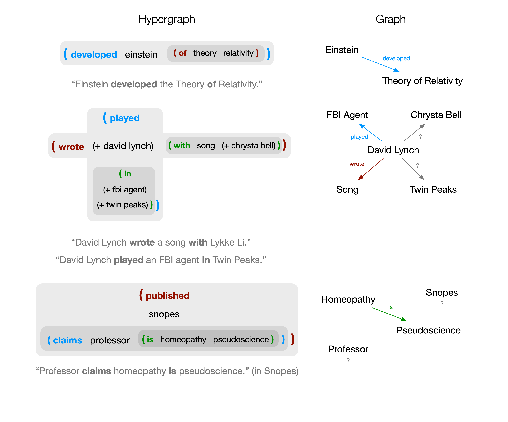

Overview¶
The Semantic Hypergraph is central to hyperbase, both conceptually and functionally. It can be seen from two different perspectives:
- as an intermediary between natural and formal languages
- as a knowledge model
We will elaborate, but first let us discuss the general concept of hypergraph.
Hypergraphs¶
The richness of information contained in natural language cannot be fully captured and analyzed using traditional graph-based network methods or distributional frameworks. On one hand, natural language is recursive, allowing for concepts constructed from other concepts as well as statements about statements and, on the other hand, it can express n-ary relationships.
While a graph is based on a set of vertices and a set of edges describing dyadic connections, a hypergraph generalizes such structure by allowing n-ary connections.
We further generalize hypergraphs in two ways: hyperedges may be ordered and recursive. Ordering entails that the position in which a vertex participates in the hyperedge is relevant (a similarity can be drawn with the concept of directed graphs). Recursivity means that hyperedges can participate as vertices in other hyperedges, which is to say: relationships between entities can themselves play the role of entities in higher-order relationships.
To illustrate, let us assume that (a b c) specifies a hyperedge connecting a, b and c. Since SH hyperedges are ordered, (a b c) is not the same as (c b a). Saying that hyperedges can be recursive means that they can connect both atomic and non-atomic hyperedges. For example:
The above hyperedge connects the entities a, b, c and (d e f). (d e f) is itself a hyperedge, connecting the entities d, e and f.
As language: syntactic rules¶
In a general sense, the hyperedge is the fundamental and unifying construct that carries meaning within the formalism we propose. The syntactic rules are simple and universal: the first element in the hyperedge is a connector, followed by one or more arguments, possibly in a recursive fashion. It is syntactically valid to place any entity (i.e.: any arbitrary hyperedge or atom) in any of these two roles. A hyperedge defines a semantic construct by combining other semantic constructs. The purpose of the connector is to specify in which sense these inner constructs are connected.
We illustrate with specific roles that a connector can play. For example, as predicate: in this case the hyperedge defines a proposition. For instance, the simple sentence "Berlin is nice" is represented as:
(is berlin nice)
To combine concepts in a specific way as to define a new concept, for example "capital of Germany":
(of capital germany)
To build concepts from other concepts, for example "meat and potatoes":
(and meat potatoes)
As a concept modifier, to represent a more specific instance of a concept, for example "highest mountain in Brazil":
(highest (in mountain brazil))
To specify conditions that can be part of a proposition, for example "when the sky is blue":
(when (is (the sky) blue))
These structures can be arbitrarily nested, for instance "Mary climbs the highest mountain in Brazil" yields:
(climbs mary (the (highest (in mountain brazil))))
In these examples we only show the human-friendly labels of atoms. Atoms contain additional annotations, e.g. specifying their type. We leave these details out of this overview, but we provide a full and formal specification of Semantic Hypergraph syntax and semantics elsewhere.
Readers who are familiar with Lisp will likely have noticed that hyperedges are isomorphic to S-expressions. This is not purely accidental. Lisp is very close to λ-calculus, a formal and minimalistic model of computation that is based on function abstraction and application. The first item of an s-expression specifies a function, the following ones its arguments. One can think of a function as an association between objects. Although hyperedges do not specify computations, connectors are similar to functions at a very abstract level, in that they define associations. The concepts of "race to space" and "race in space" are both associated to the concepts "race" and "space", but the combination of these two concepts yields different meaning by application of either the connector "in" or "to".
As knowledge model¶

As can be seen in the third example above, and thanks to nesting, it is possible to represent facts about facts. For instance, the fact that Mary states that Berlin is nice could be expressed by:
(claims mary (is berlin nice))
This makes it possible to attribute facts to sources. Sources are themselves hyperedges, potentially also connected in other ways.
Thus, another relevant concept is that of a claim. A claim is an assertion that can be attributed to a source. We thus have a knowledge representation without the need for a notion of ground truth, where instead every assertion can be modeled as a claim by a hyperedge (source) of a hyperedge (fact). This is of particular importance, e.g. for the analysis of discussions on controversial topics, where multiple actors have contradictory views on a same issue.